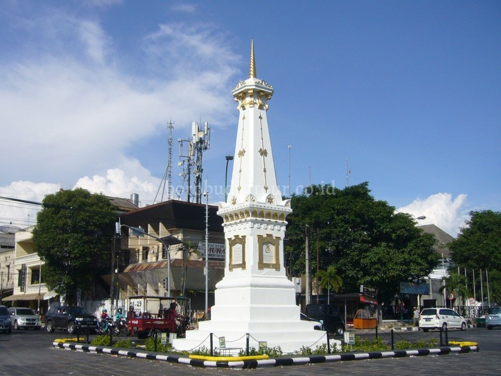

Tugu Jogja dibangun pada tahun 1755 oleh Sri Sultan Hamangku Buwono I, pendiri keraton Yogyakarta. Tugu memiliki nilai simbolis dan merupakan garis yang bersifat magis karena menghubungkan Laut Selatan, Keraton Yogyakarta, dan Gunung Merapi. Pada saat awal berdiri, secara tegas bangunan menggambarkan Manunggaling Kawula Gusti, yaitu semangat persatuan rakyat dan penguasa untuk melawan penjajah. Semangat persatuan tersebut atau yang disebut golong gilig tergambar jelas pada bangunan tugu. Tiang Tugu berbentuk gilig (silinder) dan puncaknya berbentuk golong (bulat), akhirnya tugu disebut Tugu Golong-Gilig. Fungsi lain dari Tugu sebagai patokan arah saat Sri Sultan Hamangku Buwono I melakukan meditasi yang menghadap puncak Gunung Merapi pada saat itu. Pada saat awal dibangun, Tugu berbentuk silinder yang menggkerucut di atas, bagian dasarnya berupa pagar yang melingkar, dan bagian puncaknya berbentuk bulat. Saat itu, ketinggian tugu golong gilig mencapai 25 meter. Pada 10 Juni 1867, kondisi tugu berubah total, yang mana saat itu terjadi bencana gempa bumi besar yang mengguncang Yogyakarta. Kondisi tersebut membuat bangunan Tugu runtuh. Saat runtuh inilah, bangunan Tugu dalam kondisi transisi, karena makna persatuan tidak tercermin dalam bangunan Tugu. Pada 1889, keadaan Tugu berubah. Ketika pemerintah Belanda merenovasi seluruh bangunan Tugu, bangunan dibuat dengan bentuk persegi yang setiap sisinya dihiasi semacam prasasti. Bagian tersebut menunjukkan siapa saja yang terlibat dalam renovasi tersebut. Renovasi tersebut merubah bentuk Tugu dari bentuk awal Bagian Tugu tidak lagi bulat melainkan berbentuk kerucut yang runcing. Sejak saat itu, Tugu disebut sebagai De White Paal atau Tugu Pal Putih. Ketinggian tugu menjadi 15 meter atau lebih rendah 10 meter dari bentuk semula. Sebenarnya, perombakan itu merupakan taktik Belanda yang bertujuan mengikis persatuan antara rakyat dan raja. Akan tetapi melihat perjuangan rakyat dan raja di Yogyakarta yang terjadi setelahnya, taktik Belanda tersebut gagal. Tugu mempunyai empat bentuk fisik, yaitu kotak berundak pada bagian bawah sebagai landasan, kotak dengan prasasti pada setiap sisi, piramid tumpul dengan ornamen yang menempel pada setiap sisinya, dan puncak tugu yang berbentuk kerucut ulir.
